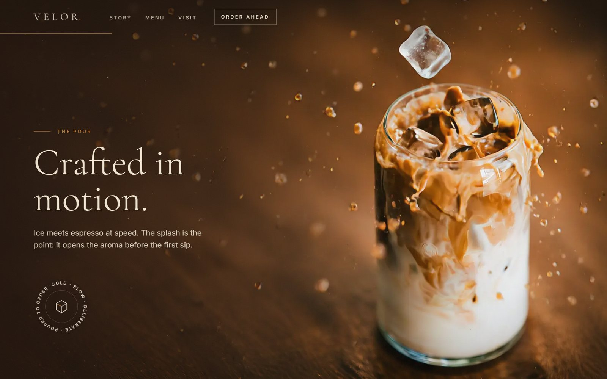
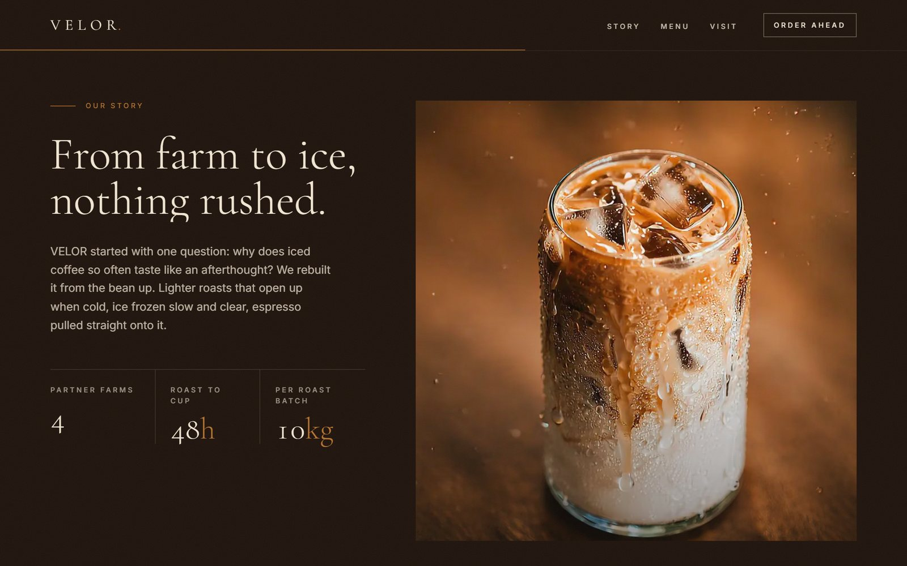
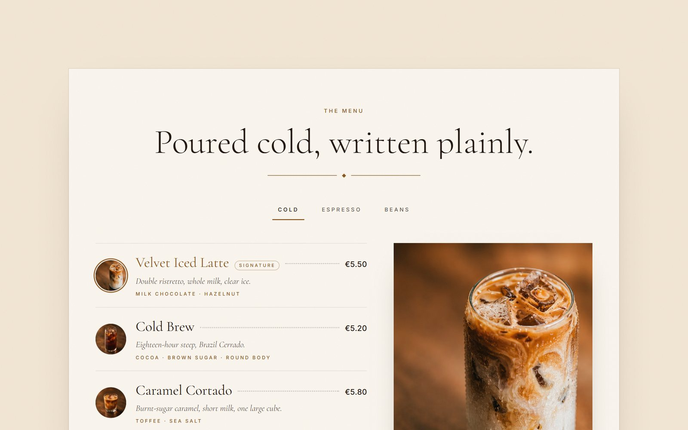
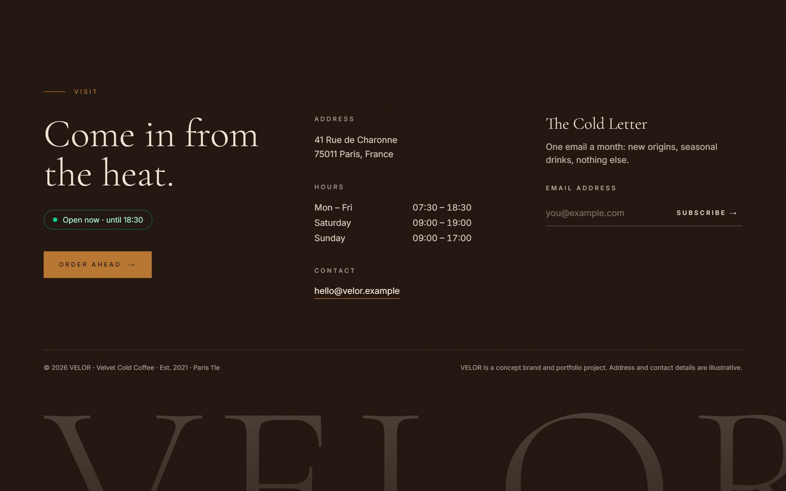
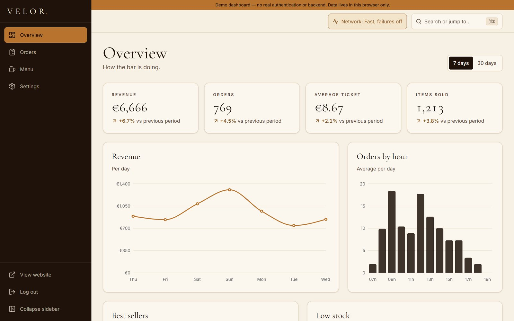
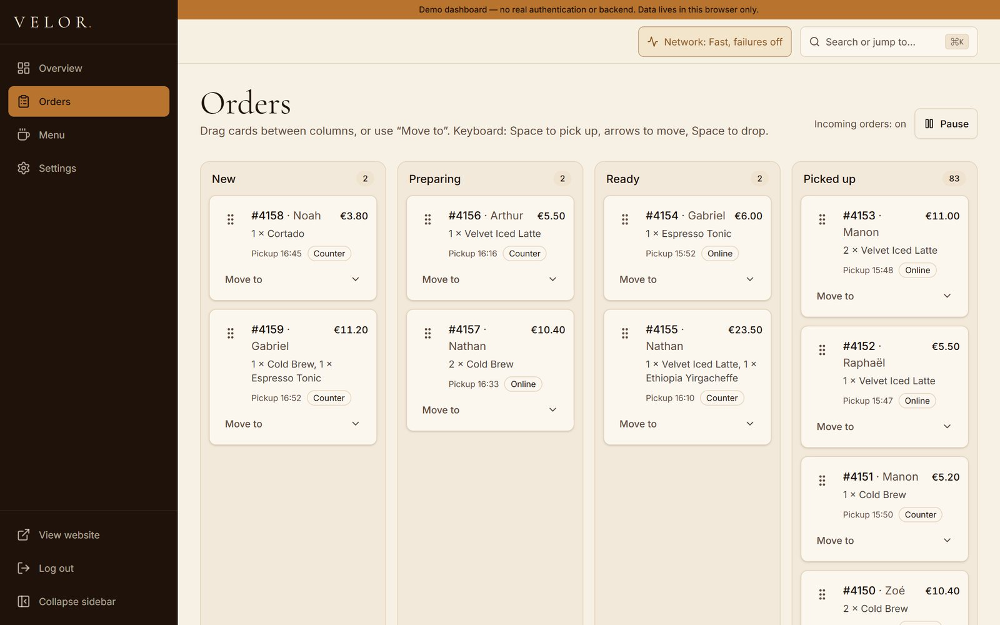
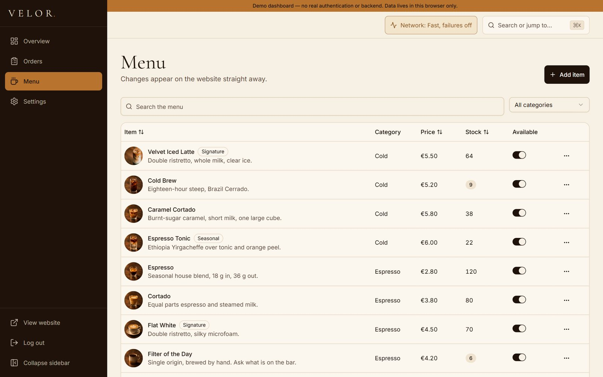
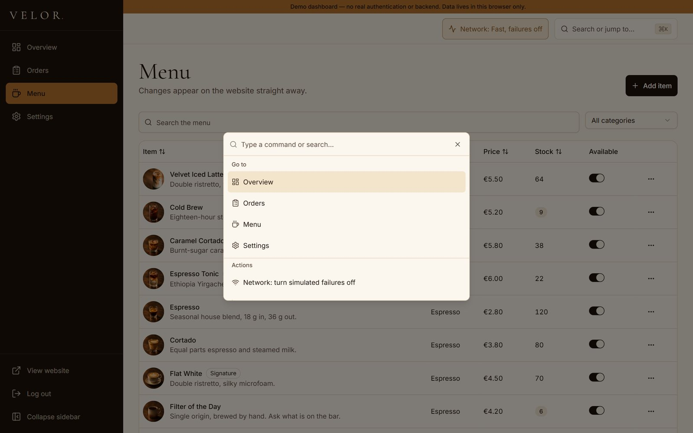

Goal
Build a brand experience that feels like a film, scrubbing a 267-frame video of an iced latte as you scroll, without giving up performance, accessibility or real content in the HTML.
Frontend Motion Dashboard
Velvet Cold Coffee - brand site and operations dashboard
A cinematic, scroll-driven website for a fictional Paris coffee bar, paired with an admin dashboard for orders, menu and opening hours. Every change made in the dashboard shows up live on the public site, through a typed REST API served by a mock service worker. No backend required.

Build a brand experience that feels like a film, scrubbing a 267-frame video of an iced latte as you scroll, without giving up performance, accessibility or real content in the HTML.
A Next.js app with two route groups: a GSAP-driven public site and a separate /admin dashboard. The two never share heavy code: the site never loads the API client, and the admin never loads GSAP or the frames.
Designed and built end to end as a solo frontend project: art direction, scroll choreography, data layer, dashboard UI, accessibility and performance tuning, and Vercel deployment.
A pinned canvas draws WebP frames tied 1:1 to scroll position, streamed progressively (30 up front, the rest when the browser is idle). The LCP element is a real <picture> poster, not the canvas.
Typed REST API on MSW v2 with zod as the single source of truth, TanStack Query caching and polling, cross-tab sync via BroadcastChannel, and optimistic updates with rollback and Retry.
300-900 ms latency, occasional failures and timeouts, with a built-in simulator (fast, normal, slow 3G). Idempotency keys make sure a retry or a double click never creates a duplicate order.
KPIs and Recharts analytics, a dnd-kit kanban with full keyboard moves, a TanStack Table menu editor with react-hook-form + zod, weekly hours, and a Ctrl+K command palette.
Semantic HTML, keyboard support everywhere including the kanban, polite live regions, 44 px touch targets, and axe WCAG 2.1 AA scans with no violations. Reduced motion stacks the beats as plain sections.
Lighthouse desktop on the production build: Performance 97-98, Accessibility 100, Best Practices 100, SEO 100. Skeletons reuse the real layout for a CLS of 0.








Next.js 15 (App Router, route groups), React 19, TypeScript strict, Tailwind CSS v4, shadcn/ui, GSAP, ScrollTrigger, SplitText, Lenis, TanStack Query v5, Zustand, zod, MSW v2, dnd-kit, TanStack Table, react-hook-form, Recharts, Playwright + axe-core, Lighthouse, and Vercel.